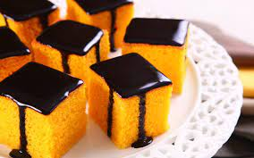

Quer ficar por dentro de toda novidade? Coloque seu melhor email
Bolo De Cenoura super facil!!!

Não tem como errar!!!
ingredientes;
- cenoura
- leite
- ovos
- farinha
- oleo
| cenoura |
leite |
ovos |
farinha |
oleo |
| 3 unidades |
250ML |
4 unidades |
200gm |
3 colheres de sopa |
Modo de preparo;
- coloque as 3 cenouras no liquidificador e bata com agua
- depois adicione o leite e o oleo
- por fim os ovos e a farinha
- coloque em uma forma e deixe por 30 minutos a 120 oC
Cobertura de chocolate tradicional:
ingredientes:
| manteiga |
chocolate |
leite condensado |
| Uma colher de sopa |
3 colheres de sopa |
Uma caixa (200ML) |
modo de preparo;
- coloque a manteiga e o leite condensado junto na panela ao fogo baixo
- Coloque o chocolate junto quando estiver quente e fique mexendo ate ficar homogênea
- Jogue por cima do bolo e espere esfriar